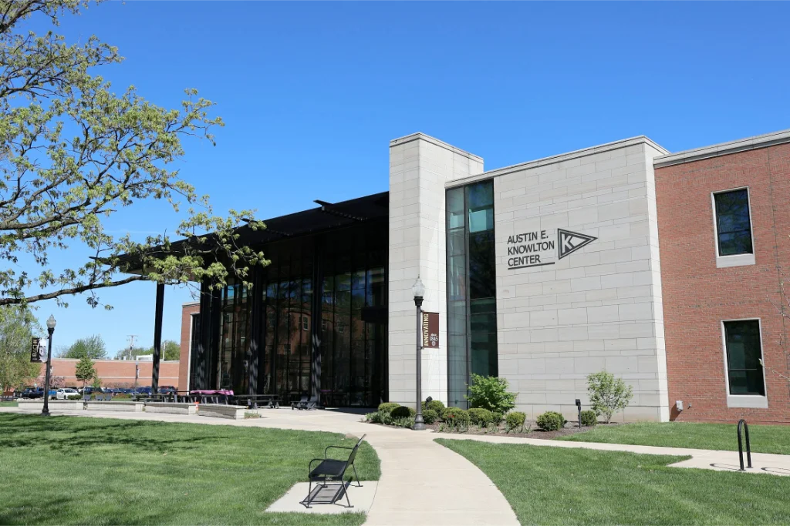
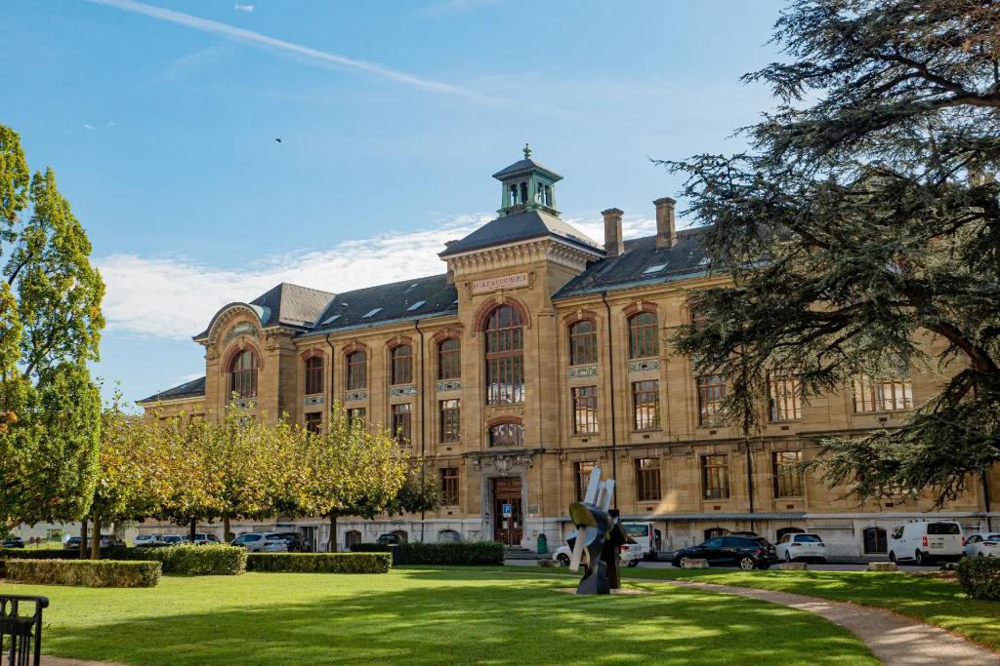
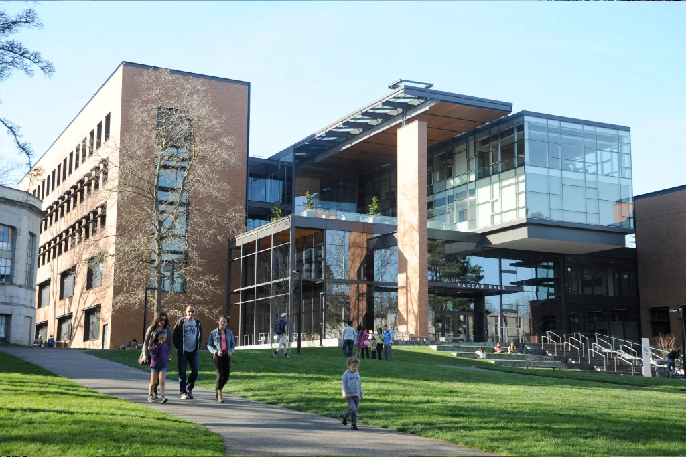

Fasilitas Kampus
Sarana prasarana modern untuk mendukung pembelajaran dan pengembangan karakter siswa.
Jelajahi Kampus Kami
Fasilitas modern yang dirancang untuk mendukung proses belajar dan tumbuh bersama
Ruang Cendikia menyediakan lingkungan sarana dan prasarana belajar yang lengkap, aman, dan nyaman bagi seluruh siswa.


Ruang Belajar Berstandar Dunia
Perpustakaan dan ruang kuliah dilengkapi dengan teknologi modern serta akses bahan pustaka digital terlengkap.
- Ruang kelas modern berteknologi pintar
- Laboratorium penelitian khusus
- Area diskusi dan kolaborasi siswa
- Pusat akses teknologi terpadu
Lab Komputer & Teknologi
Perangkat komputer spesifikasi tinggi untuk pemrograman dan riset data.
24 LaboratoriumPusat Penelitian Sains
Peralatan eksperimen mutakhir untuk riset biologi, kimia, dan fisika.
42 Fasilitas
Fasilitas Olahraga Lengkap & Modern
Sarana olahraga lengkap untuk mendukung kesehatan jasmani dan prestasi atletik siswa.
- Kolam renang standar olimpik
- Lapangan olahraga serbaguna indoor & outdoor
- Lintasan atletik profesional
- Pusat kebugaran & ruang latihan
Pusat Olahraga Air
Kolam renang berstandar internasional lengkap dengan tribun penonton.
Standar OlimpikPusat Kebugaran
Fasilitas gym modern didampingi instruktur profesional.
Peralatan Pro
Lingkungan Tempat Tinggal Nyaman
Hunian asrama yang bersih, aman, dan mendukung suasana belajar mandiri.
- Kamar tidur asrama modern dan nyaman
- Fasilitas kamar mandi dan AC lengkap
- Ruang santai bersama dan dapur komunitas
- Pengawasan keamanan 24 jam sehari
Kantin & Area Makan
Pilihan makanan sehat dan bergizi di berbagai titik kampus.
5 LokasiLayanan Keamanan
Sistem keamanan terpadu dan kualifikasi petugas berpengalaman.
Keamanan 24/7
Ruang Komunitas yang Dinamis
Sarana sosial tempat siswa berinteraksi, berkreativitas, dan menyelenggarakan acara.
- Gedung kegiatan dan sekretariat siswa
- Galeri seni dan teater pertunjukan
- Taman terbuka hijau dan area bersantai
- Ruang pertemuan dan seminar
Gedung Pertunjukan
Panggung seni dan musik lengkap dengan akustik profesional.
3 LokasiToko Sekolah & Koperasi
Menyediakan perlengkapan belajar, seragam, dan kebutuhan siswa.
8 Toko


Peta Kampus
Temukan lokasi gedung, fasilitas, dan area penting di kampus Ruang Cendikia dengan peta interaktif di bawah ini.